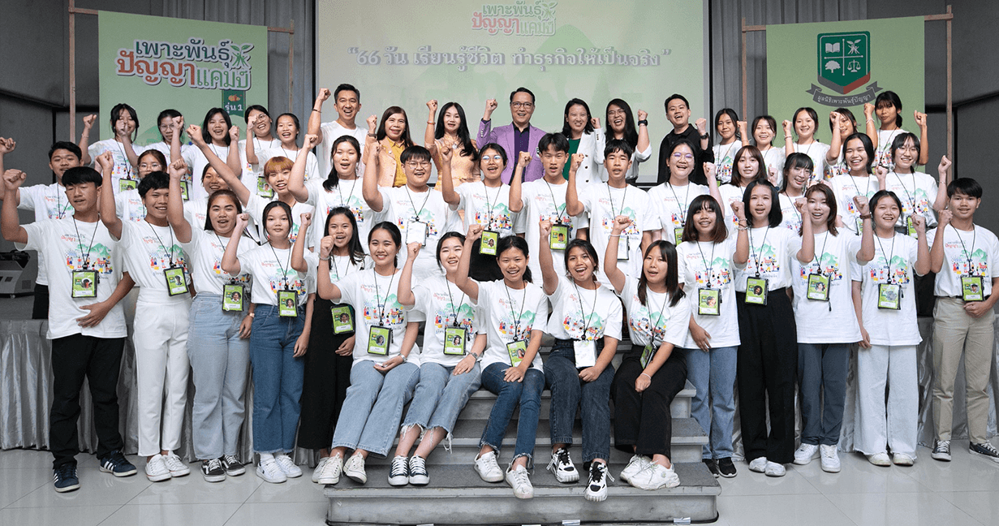

กว่าจะรู้ว่าโลกธุรกิจไม่ได้สวยหรูอย่างที่คาดหวังไว้ หลายคนอาจต้องใช้เวลาเรียนรู้อยู่นานหลายปี และหากโชคไม่ดีก็อาจสูญเสียเงินทุนของตัวเอง หรือเงินทองของพ่อแม่ที่เก็บออมมาทั้งชีวิต ดังนั้น จะดีกว่าไหมที่คนรุ่นใหม่ ซึ่งปัจจุบันสนใจการทำธุรกิจกันมากขึ้นจะมีโอกาสได้ลองผิดลองถูก
ได้ผ่านการบ่มเพาะกระบวนการทางความคิดในการเริ่มต้นธุรกิจ และการเป็นผู้ประกอบการที่ดี เพื่อลดโอกาสที่จะเกิดความผิดพลาดขึ้นในอนาคต ซึ่ง “เพาะพันธุ์ปัญญาแคมป์” กำลังมอบประสบการณ์ดังกล่าวให้เยาวชนระดับมัธยมปลายได้ลงมือทำธุรกิจกันจริง ๆ จะกำไรหรือขาดทุนก็จะได้เห็นผลลัพธ์กันจริง
ๆ
ย้อนกลับไปเมื่อปลายปี 2565 “มูลนิธิเพาะพันธุ์ปัญญา” ก่อตั้งขึ้นมาภายใต้การสนับสนุนของธนาคารกสิกรไทย มีวัตถุประสงค์เพื่อสานต่อแนวทางการเรียนรู้ตลอดชีวิต ให้เกิดความต่อเนื่องด้านแนวคิดและแนวปฏิบัติของเพาะพันธุ์ปัญญาที่ธนาคารกสิกรไทยดำเนินโครงการมานานถึง
10 ปี นำมาต่อยอดด้วยการเพิ่มองค์ความรู้ใหม่ ทักษะใหม่ และมอบประสบการณ์ใหม่ให้กับเยาวชนผ่านการลงมือปฏิบัติจริงในโครงการเพาะพันธุ์ปัญญาแคมป์ “66 วันเรียนรู้ชีวิต ทำธุรกิจให้เป็นจริง” ซึ่ง รุ่นที่ 1 ได้เริ่มต้นขึ้นแล้ว ตั้งแต่มีนาคม 2566 ที่ผ่านมา
ดร.อดิศวร์
หลายชูไทย กรรมการผู้จัดการ มูลนิธิเพาะพันธุ์ปัญญา เล่าถึงจุดเริ่มต้นของโครงการเพาะพันธุ์ปัญญา ว่าเกิดจากแนวดำริของคุณบัณฑูร ล่ำซำ ตั้งแต่สมัยดำรงตำแหน่ง ประธานเจ้าหน้าที่บริหาร ธนาคารกสิกรไทย (ปัจจุบันเป็น ประธานกิตติคุณธนาคารกสิกรไทย) ที่ให้ความสำคัญต่อการพัฒนาคนโดยผ่านระบบการศึกษาที่เป็นกลไก
พื้นฐานทางความคิดที่สำคัญโดยเฉพาะกับเยาวชน ถือเป็นปัจจัยสำคัญที่จะสร้างความยั่งยืนในการดำรงชีวิตและการพัฒนาชุมชนท้องถิ่น

“10 ปีที่ผ่านมากับโครงการเพาะพันธ์ปัญญา และช่วง 3 ปีสุดท้ายจัดขึ้นที่จังหวัด น่าน ชื่อ น่านเพาะพันธุ์ปัญญา เราพบว่าเยาวชนเกิดการเปลี่ยนแปลงขึ้นจริง มีกระบวนการทางความคิดเป็น เหตุ และ ผล สามารถตั้งสมมติฐานและหาคำตอบด้วยตรรกะ จึงอยากสานต่อความเปลี่ยนแปลงทางความคิดนั้นเพื่อให้เกิดความต่อเนื่อง
จึงได้ริเริ่มโครงการ เพาะพันธุ์ปัญญาแคมป์ ที่จังหวัดน่านสิ่งที่เราให้ จะเป็นการเพิ่มเติมสิ่งใหม่เข้าไป อย่างน้อง ๆ กลุ่มนี้พวกเขาสนใจอยากทำธุรกิจ เป็นผู้ประกอบการ อยากมีรายได้และประสบความสำเร็จในอนาคต ดังนั้น สิ่งที่เราจะให้ก็คือทักษะการเป็นผู้ประกอบการ
ให้รู้ว่าการทำธุรกิจจะต้องรู้อะไรบ้าง และควรเริ่มต้นจากตรงไหน
ส่วนที่แตกต่างจากการเรียนในห้องเรียน คือน้อง ๆ จะได้ทดลองทำธุรกิจจริง โดยมูลนิธิเพาะพันธุ์ปัญญา จะให้ทุนในการประกอบธุรกิจจำนวนหนึ่ง เพื่อพวกเขาจะได้ออกไปทำธุรกิจที่เกิดจากความคิดวิเคราะห์ของพวกเขาเอง
หากลุ่มเป้าหมายเองและขายเอง พวกเขาจะได้เรียนรู้เลยว่าสิ่งที่คิดและทำนั้นจะสำเร็จหรือไม่สำเร็จ”
อย่างไรก็ดี เพาะพันธุ์ปัญญาแคมป์ ไม่ได้กำหนดเป้าหมายให้เยาวชนที่ผ่านการบ่มเพาะเมื่อจบออกจากค่ายไปแล้วจะต้องไปเป็นนักธุรกิจ หรือประกอบธุรกิจของตัวเอง
ซึ่ง ดร.อดิศวร์ บอกด้วยว่า ของใหม่ที่พวกเขาจะได้ติดตัวกันกลับบ้านไป ไม่ใช่สิ่งของ แต่เป็นความรู้ใหม่ในการทำธุรกิจ ทักษะใหม่ในการทำธุรกิจ และโอกาสที่จะได้ลองผิดลองถูกจากการลงมือปฏิบัติจริง เรื่องเหล่านี้จะเข้าไปอยู่ในกระบวนการทางความคิด และเป็นประสบการณ์ที่จะติดตัวไปตลอดชีวิต
“เราคาดหวังให้เขาได้มีองค์ความรู้
มีข้อมูลมากพอที่จะนำไปตัดสินใจอีกทีว่าตนเองเหมาะจะเป็นผู้ประกอบการหรือไม่ โดยดึงสิ่งที่จะเกิดขึ้นในอนาคตมาให้ได้เรียนรู้และรับประสบการณ์ โดยไม่ต้องไปเรียนรู้เองและใช้เงินลงทุนของตัวเอง เพื่อที่อย่างน้อยประสบการณ์เหล่านี้จะเป็นตัวช่วยในการตัดสินใจให้แก่น้อง
ๆ เยาวชนว่าพวกเขาควรจะเป็นนักธุรกิจ หรือจะไปประกอบอาชีพอื่นและยังคาดหวังเล็ก ๆ ด้วยว่า สิ่งที่เราเติมเข้าไป ในที่สุดแล้วพวกเขาจะสามารถนำไปใช้ประโยชน์ได้เต็มที่ และหากประสบความสำเร็จ ก็จะกลับมาแบ่งปัน ดูแลและพัฒนาชุมชนบ้านเกิด กลายเป็นบุคลากรที่จะสร้างความเปลี่ยนแปลงเพื่อสังคมที่ยั่งยืนต่อไป”
สำหรับโครงการเพาะพันธุ์ปัญญาแคมป์ รุ่นที่ 1 “66 วันเรียนรู้ชีวิต ทำธุรกิจให้เป็นจริง” เป็นแคมป์ที่สอนเยาวชนให้สามารถทำธุรกิจ โดยดึงศักยภาพที่พวกเขามีอยู่แล้วออกมาใช้ได้เต็มที่ เสริมกับความรู้จากวิทยากร นักธุรกิจมืออาชีพระดับโลก
และนักธุรกิจที่ประสบความสำเร็จในจังหวัดน่าน มาถ่ายทอดประสบการณ์ตรง และมีโค้ชเป็นผู้คอยชี้แนะแนวทางให้กับเยาวชนตลอดระยะเวลาทั้ง 66 วัน รวมถึง การให้เงินทุนเริ่มต้นในการทำธุรกิจทีมละ 50,000 บาท เพื่อให้เยาวชนกลุ่มนี้ได้สัมผัสกับประสบการร์การลงทุนทำธุรกิจจริง
ตั้งแต่เริ่มต้นกระบวนการไปจนถึงปลายทางที่เป็นการสรุปผลกำไรหรือขาดทุน
เปิดโอกาสให้เยาวชนจังหวัดน่านที่เคยผ่านห้องเรียนเพาะพันธุ์ปัญญา โรงเรียนละ 5 คนจาก 8 โรงเรียน รวม 40 คน ซึ่งในรุ่นแรกนี้จะมาจาก
โรงเรียนศรีสวัสดิ์วิทยาคาร อ.เมืองน่าน
โรงเรียนสา อ.เวียงสา
โรงเรียนราชประชานุเคราะห์ 56 อ.เวียงสา
โรงเรียนปัว อ.ปัว
โรงเรียนท่าวังผาพิทยาคม อ.ท่าวังผา
โรงเรียนเชียงกลางประชาพัฒนา อ.เชียงกลาง
โรงเรียนพระธาตุพิทยาคม
อ.เชียงกลาง
โรงเรียนเมืองลีประชาสามัคคี อ.นาหมื่น
การเรียนการสอน เน้นการเรียนรู้ผ่านกิจกรรมสนุกสนานพร้อมสอดแทรกแนวคิดการใช้ชีวิต และการประกอบธุรกิจจริง โดยแบ่งออกเป็น 3 แคมป์ย่อย ประกอบด้วย
- แคมป์แรก “กล้าเรียน” เป็นการปูพื้นฐานการสร้างไอเดียธุรกิจ วิเคราะห์ความเป็นไปได้
และเรียนรู้สิ่งที่จำเป็นในการทำธุรกิจจริงภายในระยะเวลา 5 วัน และหลังจากแคมป์แรก เด็ก ๆ จะมีเวลา 23 วัน ในการพัฒนาสินค้าและบริการเพื่อนำเข้าสู่ตลาด
- จากนั้นกลับเข้าสู่ แคมป์ที่สอง “กล้าลุย” เป็นช่วงเวลาที่ทุกคนจะได้ลงมือขาย
ลุยตลาดจริง เพื่อเรียนรู้จุดเด่นจุดด้อยและนำไปพัฒนาและต่อยอดผลิตภัณฑ์ ระยะเวลา 4 วันและจะมีช่วงการดำเนินธุรกิจจริง 30 วัน
- และปิดท้ายกันที่ แคมป์ “กล้าก้าว” ระยะเวลา 4 วัน กับการสรุปรายงานและนำเสนอผลประกอบการของแต่ละกลุ่ม
พร้อมรับแรงบันดาลใจ
ด้านตัวแทนเยาวชนจาก เพาะพันธุ์ปัญญาแคมป์ “นับหนึ่ง” หรือนางสาวเพชรชรินทร์ คำพุฒ จากโรงเรียนสา อ.เวียงสา จ.น่าน กล่าวว่า เห็นชื่อ เพาะพันธุ์ปัญญาแคมป์ ก็คิดแล้วว่าเป็นโครงการที่ดี และคงจะหายากสำหรับค่ายกิจกรรมที่จะให้เราได้ทดลองทำจริง
ๆ คือได้เรียนทั้งหลักการของธุรกิจ และลงมือทำจริง อย่างที่คุณบัณฑูร ล่ำซำ ท่านบอกว่า “พูดน่ะทำง่าย แต่ลองทำสิ ทำให้เห็นหน่อย” ซึ่งค่ายนี้ทำให้เราได้มาสัมผัสกันจริง ๆ สำหรับตัวเองคิดว่าเป็นเรื่องที่ดีมาก ทำให้ได้สัมผัสกับโลกธุรกิจมากขึ้น เชื่อว่าจะสามารถนำไปประยุกต์ใช้ได้อีกหลายอย่าง
ทั้งเรื่องการเรียนต่อ และสานความฝันการทำธุรกิจของตนเองในอนาคต
“ในค่ายนี้ ยังเชิญนักธุรกิจตัวจริงมาเล่าถึงประสบการณ์ต่าง ๆ ทั้งที่เคยล้มเหลวมาก่อน และประสบความสำเร็จ ทำให้รู้สึกว่าความฝันที่อยากจะทำธุรกิจ หากตั้งใจจริงแล้ว ก็ไม่ไกลเกินเอื้อม
แค่ต้องมีความพยายามมากขึ้น และด้วยความที่เป็นคนไม่ได้มีต้นทุน เป็นลูกเกษตรกร เมื่อมาเข้าค่ายนี้แล้ว คิดได้ว่าหากจะทำธุรกิจจริงก็ยังมีหนทางอื่นที่เราน่าจะทำต่อได้ เพียงแค่ต้องบริหารคนให้เป็น หาหุ้นส่วน หาคนที่มีความรู้ความสามารถมาช่วย เลยทำให้ความฝันที่เคยคิดว่ายิ่งใหญ่และไกลตัว
ตอนนี้มันดูเข้าใกล้เราเข้ามานิดนึง”
ส่วน “จีโน่” นายจิระศักดิ์ แดงต๊ะ จากโรงเรียนเมืองลีประชาสามัคคี อ.นาหมื่น จ.น่าน กล่าวว่า การเข้าร่วม เพาะพันธุ์ปัญญาแคมป์ ช่วยให้เข้าใจถึงการทำธุรกิจมากขึ้น ได้รับความรู้ใหม่เยอะมาก ตั้งแต่การหาไอเดียธุรกิจ การหากลุ่มเป้าหมาย
จะตอบโจทย์อย่างไร และลงลึกรายละเอียดเกี่ยวกับการคิดต้นทุน ซึ่งบางเรื่องที่เราคิดไม่ถึงเลย ก็เข้าใจมากขึ้น มั่นใจว่าความรู้ที่ได้รับจากค่ายจะช่วยให้แนวคิดการทำธุรกิจในอนาคตของตัวเองเป็นรูปเป็นร่างมากขึ้น และรู้ว่าจะศึกษาต่อไปทางด้านไหน
“และจากที่ได้ฟังมุมมองของนักธุรกิจ
ทำให้รู้ว่าบางท่านตอนเด็กก็ไม่ได้เรียนเก่ง แต่ก็ประสบความสำเร็จได้ และบางท่านที่เรียนเก่งมาทำงานก็มีพลาดมีล้มเหลว แต่ก็ลุกขึ้นมาใหม่ ทำให้ผมมีกำลังใจมากขึ้นว่า แม้จะเรียนไม่เก่งแต่เราก็สามารถประสบความสำเร็จในชีวิตได้ ขอแค่ขยัน ตั้งใจ ไม่ย่อท้อ
หรือหากล้มแล้วก็ลุกขึ้นมาใหม่ สำหรับผมเป็นคนที่ชอบความท้าทายอยู่แล้ว ก็ทำให้เรามีความมุ่งมั่นมากขึ้น ถึงจะยากแค่ไหน แค่เราตั้งใจ หากล้ม ก็ลุกให้เร็ว รวมถึงการทำงานเป็นทีม เหล่านี้สามารถทำไปใช้ในอนาคตได้อย่างแน่นอน”
สำหรับแคมป์แรก “กล้าเรียน” ได้เริ่มขึ้นแล้วเมื่อวันที่ 23-27 มีนาคมที่ผ่านมา ต้องบอกว่า ตลอดระยะเวลา 5 วันของการอยู่ในแคมป์มีกิจกรรมมากมายที่น้อง ๆ ได้เรียนรู้ มีครบทุกอารมณ์ความรู้สึก ทั้งสนุกสนาน ตื่นเต้น เร้าใจจากเกมการแข่งขัน สาระความเข้มข้นจากบทเรียนการสร้างสรรค์ไอเดียธุรกิจ เปิดประสบการณ์ใหม่ด้วยการออกไปลุยตลาด
พบปะพูดคุยกับผู้ประกอบการท้องถิ่นตัวจริงเพื่อเรียนรู้การทำธุรกิจ ได้เรียนรู้การทำงานเป็นทีมในรูปแบบการบริหารธุรกิจจริง บทเรียนความผิดพลาด ล้มและลุกเร็ว เมื่อเห็นว่าไอเดียธุรกิจที่คิดในระยะแรกมีความเป็นไปได้น้อย พวกเขาจะมองหาสิ่งใหม่ที่มีความเป็นไปได้มากกว่าในทันที
ด้วยเวลาอันจำกัดยังสามารถสร้างสรรค์ออกมาเป็นไอเดียธุรกิจ
ถึง 8 ธุรกิจจาก 8 กลุ่มโรงเรียน ทั้ง 8 ธุรกิจจะได้รับการตอบรับแค่ไหน ผลลัพธ์จะเป็นอย่างไร มาร่วมสนุกและติดตามให้กำลังใจกับน้อง ๆ ทั้ง 8 ทีมในแคมป์ต่อไป “กล้าลุย” ระหว่างวันที่ 20-23 เมษายน 2566 พร้อมลุยตลาดจริงอีก 30 วัน